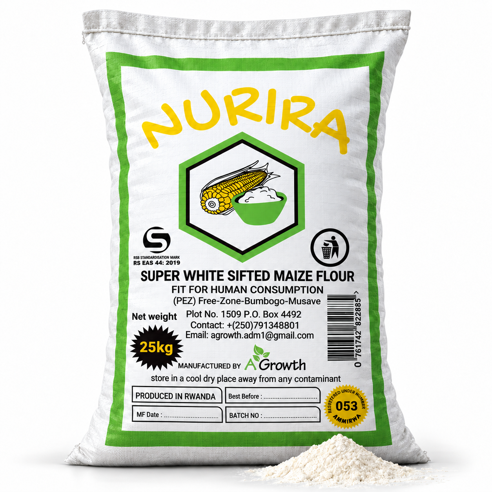

Product 01

Super White Sifted Maize Flour
Smooth, clean, and consistently milled for delicious everyday meals. Our Super White Sifted Maize Flour is designed for families, retailers, restaurants, and institutions that value dependable quality in every bag.
Best for
- Everyday home cooking
- Retail and wholesale distribution
- Restaurants, schools, and institutional kitchens
Available packaging
- 5 kg · 10 kg · 25 kg